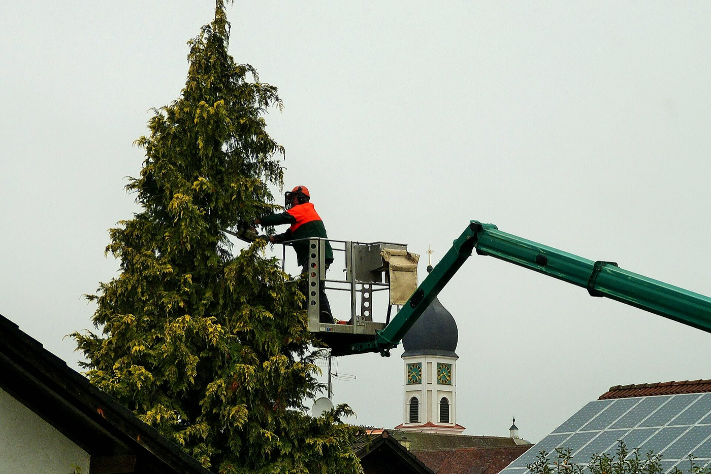
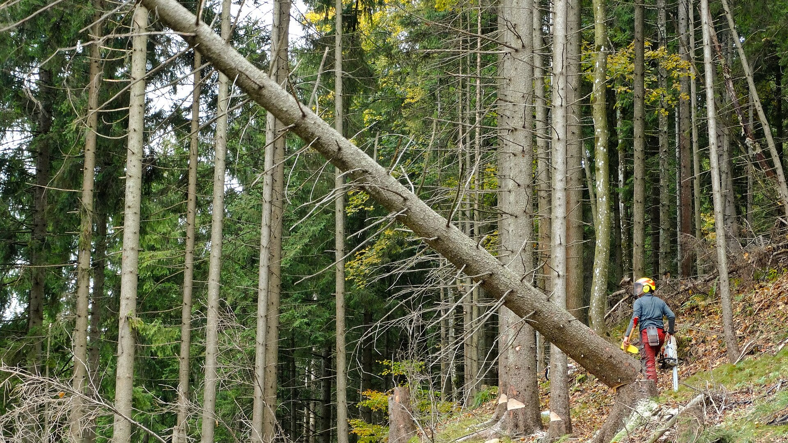
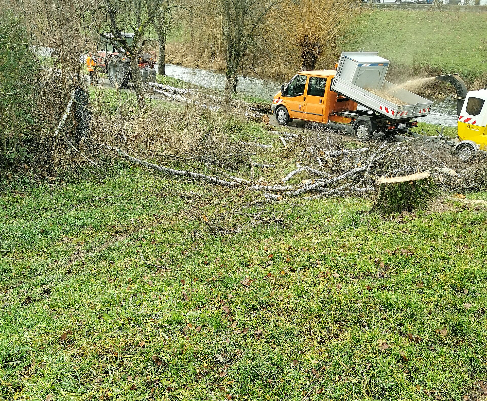

/01Wycinamy drzewa w całości albo kawałkami, od góry, gdy obok stoi dom, garaż albo płot. Gałęzie opuszczamy kontrolowanie, żeby nic nie spadło tam, gdzie nie trzeba.

Drzewa przy domu, na działce i przy drodze, elewacje domów i budynków firmowych. Powiedz przez telefon, co jest do zrobienia. Przyjedziemy, obejrzymy miejsce i podamy cenę, zanim zaczniemy.
Do każdego zlecenia dobieramy sprzęt: podnośnik koszowy albo jedną z trzech drabin.

/01Wycinamy drzewa w całości albo kawałkami, od góry, gdy obok stoi dom, garaż albo płot. Gałęzie opuszczamy kontrolowanie, żeby nic nie spadło tam, gdzie nie trzeba.
 /02
/02
Zmywamy zielony nalot, glony, kurz i zacieki ze ścian domów i budynków. Wysokie partie elewacji myjemy z kosza podnośnika albo z drabiny.
 /03
/03
Skracamy konary nad dachem, odcinamy suche i połamane gałęzie, przerzedzamy koronę. Drzewo zostaje, a przestaje zagrażać budynkom i ludziom.
 /04
/04
Mamy własną zwyżkę. Z kosza dochodzimy do korony wysokiego drzewa, rynny, szczytu dachu czy elewacji bez stawiania rusztowania.
 /05
/05
Drabiny w trzech długościach i podnośnik pozwalają nam dobrać sprzęt do miejsca. Dzwoń także z nietypowym zleceniem na wysokości, powiemy wprost, czy się podejmiemy.

/06Po wycince zabieramy gałęzie albo układamy drewno na posesji, tak jak ustalimy przy wycenie.
Nie wiesz, czego potrzebujesz? Umów bezpłatne oględziny, tel. +48 602 474 496.
Opisz, co trzeba zrobić. Przyjedziemy, obejrzymy miejsce i podamy cenę przed rozpoczęciem pracy.